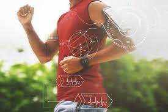

Wearable Technology 
This includes devices such as smartwatches and fitness trackers that can be worn by athletes to track various metrics such as heart rate, sleep, and activity levels. This data can then be used to optimize training and performance. In addition, this technology can be used in the form of smart clothing, which can track player's movement and performance in real-time, providing coaches with valuable insights.
Virtual & Augmented Reality 
These technologies can be used to create immersive training simulations for athletes, allowing them to practice and improve their skills in a virtual environment. In addition, fans will be able to experience live events in a more immersive way, feeling like they are right in the middle of the action.
Sports Analytics 
Sophisticated data analysis and machine learning algorithms will be used to track and analyze data from athletes and teams, providing coaches and trainers with valuable insights into training, performance, and injury prevention.
Smart Stadiums 
Smart stadiums will have technologies such as IoT sensors and cameras, which will gather data on crowd movement, parking, and stadium usage. This data can be used to optimize the fan experience and help teams to improve their operations.
Biometrics 
Biometrics such as heart rate monitoring, body temperature, and hydration levels will be used to monitor the physical condition of athletes, helping to prevent injury and optimize performance.
Drones & Robotics 
Drones can be used to capture aerial footage of events, and robotics can be used for tasks such as maintaining the field or court.
3D Printing 
3D printing can be used to create customized equipment and prosthetics for athletes, as well as to repair equipment quickly and efficiently.